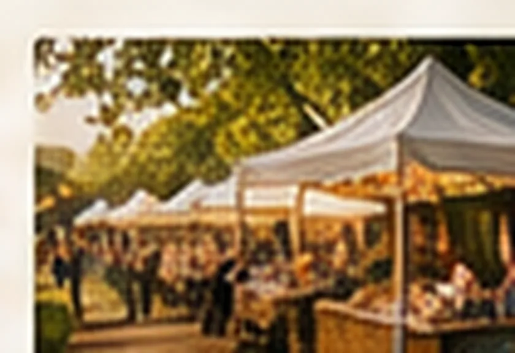
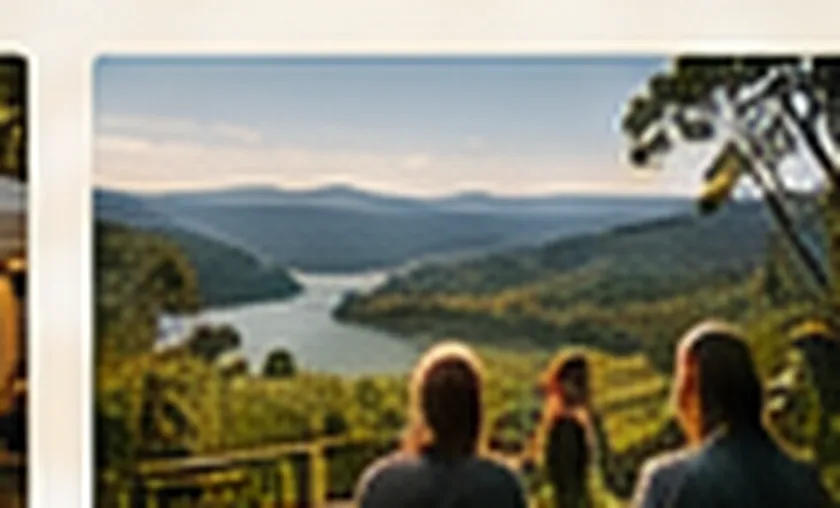
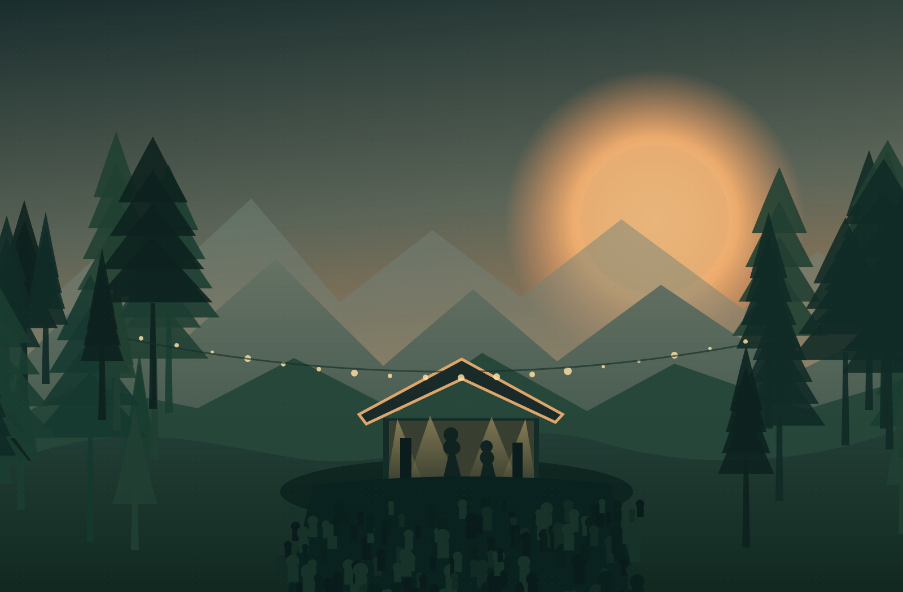

01 / THE EXPERIENCE
Local flavours
Picture delicious seasonal dishes, fresh coffee and easygoing food trucks.
FIND YOUR MOMENT
There is something about a good gathering in a beautiful place: the conversations are longer, the food tastes better and the soundtrack stays with you.
This imagined weekend is an invitation to slow down.
Picture delicious seasonal dishes, fresh coffee and easygoing food trucks.

Discover imagined market stalls filled with craft, prints and small treasures.

Walk a little slower and enjoy the bushland, hills and open sky.

A fictional hillside festival with genuine affection for the landscape that inspired it.
GOOD TO KNOW
Everything you need to know about this portfolio demonstration, and the details a real festival would provide.
No. The Hinterland Sessions is a fictional creative portfolio project. The website demonstrates a realistic event experience, but there are no real dates, performers or tickets.
The concept is inspired by the Gold Coast hinterland in Queensland, Australia. No specific venue has been booked or confirmed.
No. All prices and pass types are demonstration content only. No payments, registrations or bookings are taken.
Camping appears as a possible festival experience in this concept, but there is no real campground or accommodation to reserve.
For a real event, these details would be confirmed with the venue and published clearly before tickets were sold. They are deliberately not promised in this fictional concept.
Yes. This demonstration uses HTML and CSS, including the mobile menu and these expandable frequently asked questions.